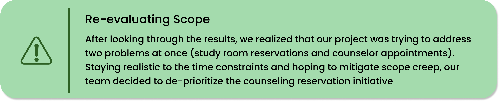
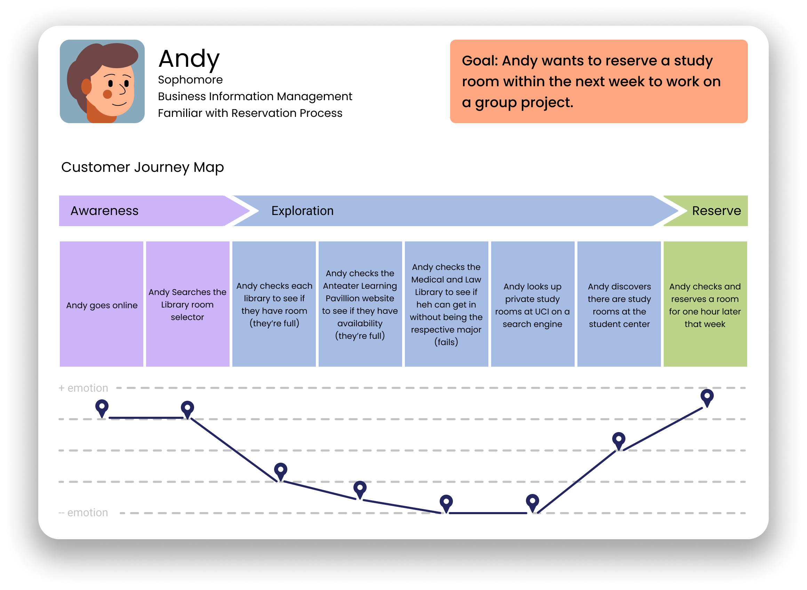
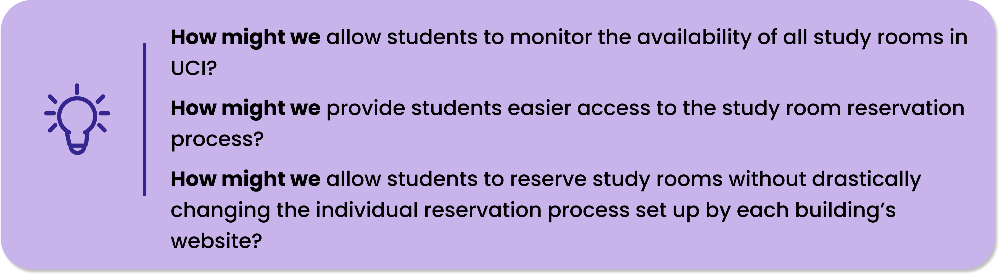

Carlos Alfonso-Lim

Getting Students engaged with Study Rooms
Role: UX Designer and Researcher,
primary facilitator
Duration: Oct - Nov 2021 (7 weeks)
Methods: Surveys, Customer Journeys
Maps, Personas, Wireframes,
Tools:
Figma, Google Forms, Miro, Maze
When brainstorming issues, our team thought it would be a good idea to list our own pain-points as students. Very quickly, we honed in on the study room and academic counseling reservation process. Initially, we had some ideas on how to “fix” the problem, but一taking a step back一we realized the importance of acquiring data. This could help us understand the general sentiments around our topic and clarify whether our sentiments were shared or not.
After parsing through our research, we decided to make a persona representative of our research insights. We also provided user journeys (based upon our research findings), mapping their emotional state to each decision point of the process.
 Schedule management!: Parkinson’s Law: work expands to fill the time allowed. Early in the process we found managing work to be difficult, with flexible scheduling for certain tasks delaying our design process. Heading into our third week, we established a pseudo-sprint backlog. Every meeting adjourned when each member understood their responsibilities for the week and the deliverables required. Managing schedules is crucial for maintaining project velocity.